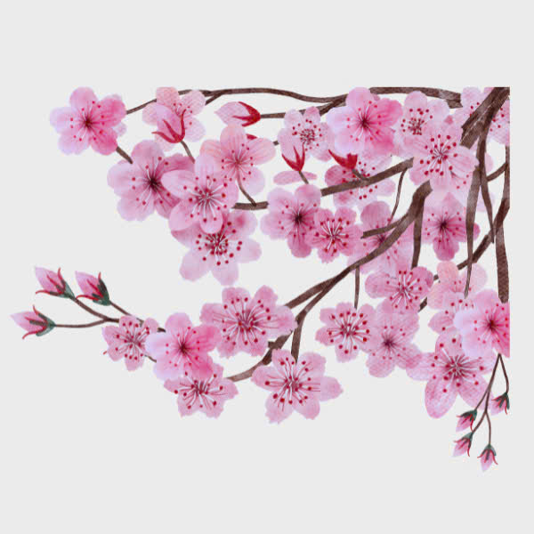
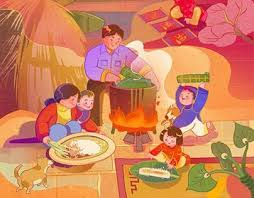

🌸 LỜI NGỎ – XUÂN VỀ TRÊN QUÊ HƯƠNG
Khi những cánh hoa đào khẽ rung mình trong gió xuân, cũng là lúc đất trời bước sang
một vòng tuần hoàn mới. Xuân về mang theo hơi ấm, mang theo niềm tin và hy vọng,
đánh thức trong mỗi người con đất Việt tình yêu quê hương sâu sắc.
Báo tường chào xuân là nơi tập thể lớp chúng em gửi gắm những suy nghĩ,
cảm xúc và ước mơ của tuổi trẻ. Qua từng dòng chữ,
chúng em mong muốn lưu giữ vẻ đẹp truyền thống của ngày Tết
và khẳng định tinh thần trách nhiệm của thế hệ trẻ hôm nay.
🎋 Ý NGHĨA THIÊNG LIÊNG CỦA NGÀY TẾT
Tết Nguyên Đán không chỉ là ngày khởi đầu của một năm mới,
mà còn là dịp để mỗi người nhìn lại chặng đường đã qua,
trân trọng những thành quả đạt được và rút ra bài học cho tương lai.
Ngày Tết là lúc con cháu tưởng nhớ tổ tiên, bày tỏ lòng biết ơn đối với những người
đã sinh thành và nuôi dưỡng mình. Đây cũng là dịp để gắn kết tình thân,
giữ gìn và phát huy những giá trị văn hóa tốt đẹp của dân tộc Việt Nam.

🎍 PHONG TỤC NGÀY TẾT CỔ TRUYỀN
Từ bao đời nay, phong tục ngày Tết đã trở thành nét đẹp không thể thiếu
trong đời sống tinh thần của người Việt. Những ngày cuối năm,
mọi nhà đều tất bật dọn dẹp, trang hoàng nhà cửa với mong ước
xua đi những điều không may của năm cũ.
Hình ảnh bánh chưng xanh, mâm ngũ quả, câu đối đỏ
không chỉ mang giá trị vật chất mà còn chứa đựng ý nghĩa nhân văn sâu sắc,
thể hiện ước mong về một năm mới đủ đầy, hạnh phúc và bình an.

👨👩👧👦 TẾT – KHOẢNH KHẮC ĐOÀN VIÊN
Giữa nhịp sống hối hả, Tết là khoảng thời gian quý báu để các thành viên
trong gia đình sum họp bên nhau. Bữa cơm tất niên không chỉ là bữa ăn,
mà là biểu tượng của sự đoàn viên và yêu thương.
Những câu chuyện được kể, những nụ cười được trao,
tất cả tạo nên không khí ấm áp, giúp mỗi người thêm trân trọng
giá trị của gia đình và tình thân ruột thịt.

🧧 TUỔI THƠ VÀ NIỀM VUI LÌ XÌ
Đối với trẻ em, Tết là những ngày mong đợi nhất trong năm.
Tiếng cười giòn tan, bộ quần áo mới và những phong bao lì xì đỏ thắm
là ký ức đẹp đẽ theo suốt tuổi thơ của mỗi người.

Lì xì không chỉ mang ý nghĩa vật chất,
mà còn là lời chúc may mắn, bình an mà người lớn gửi gắm
đến thế hệ tương lai của đất nước.
 tổ 1
tổ 1